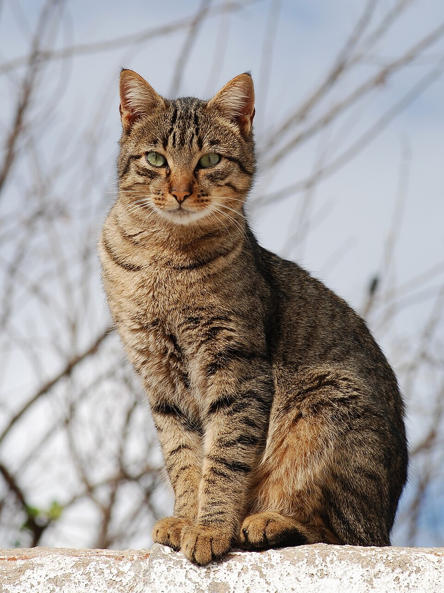
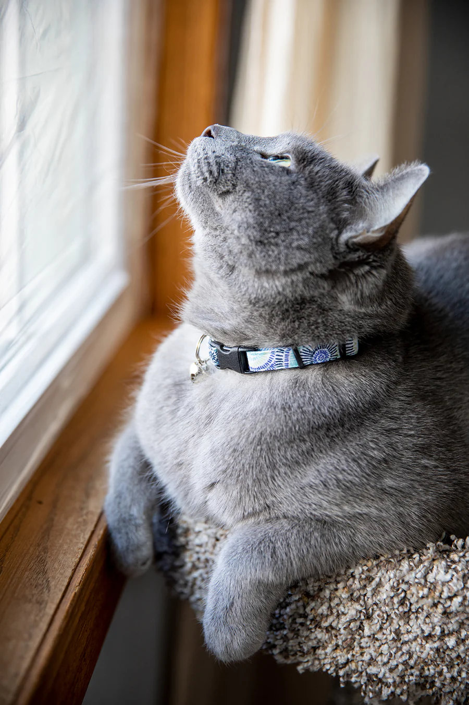
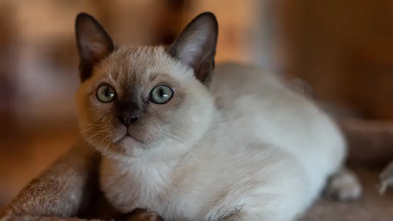

Home
About
Gallery
Found Pets
Report a Pet
Tips
Contact
Is your pet missing?
Report a Lost Pet Here

Reyna
Female Cat
Brown fur with orange stripes

Fox
Male Cat
Grey collar

Nini
Female Cat
1 year old, grey fur with white body